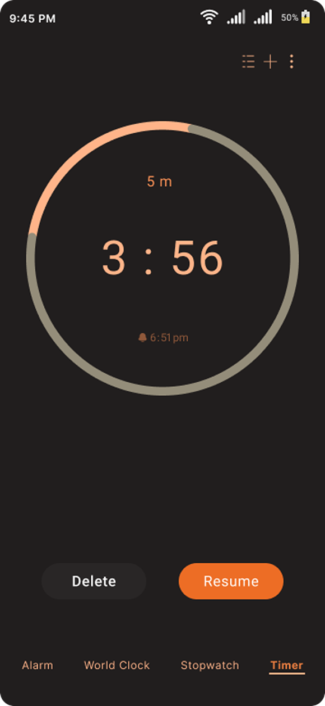
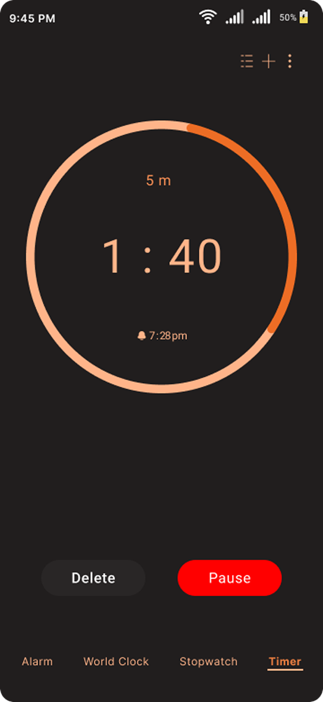
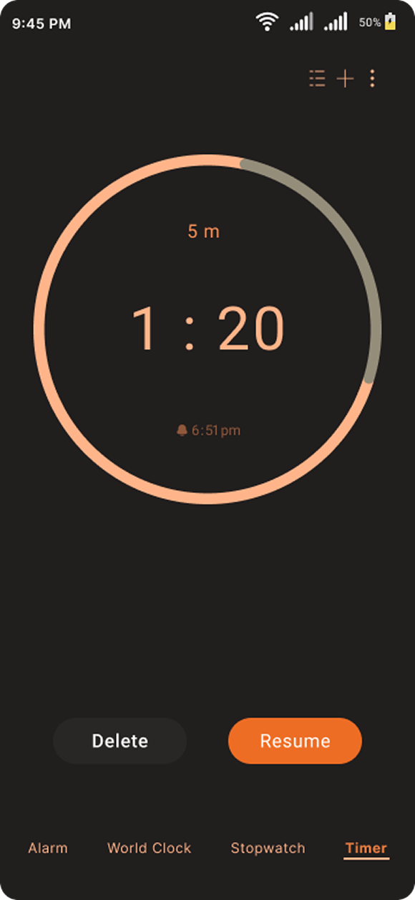
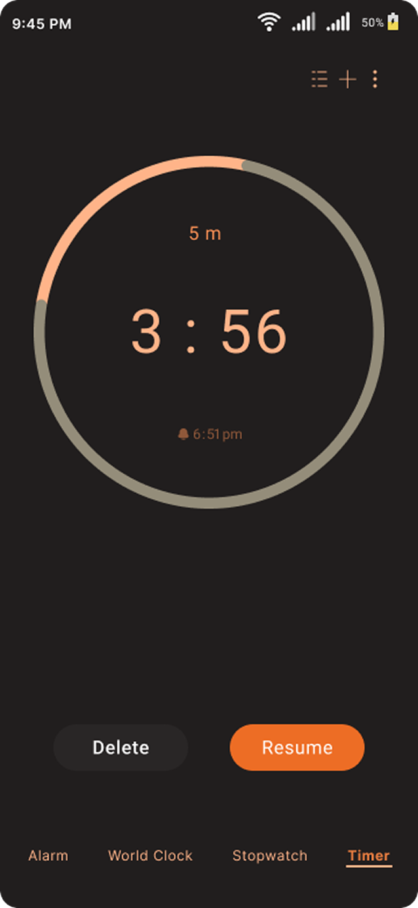
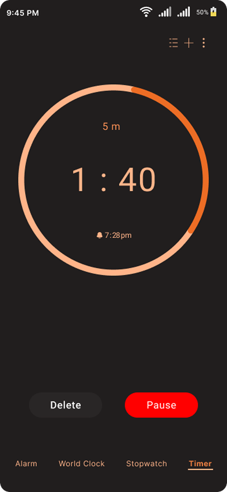
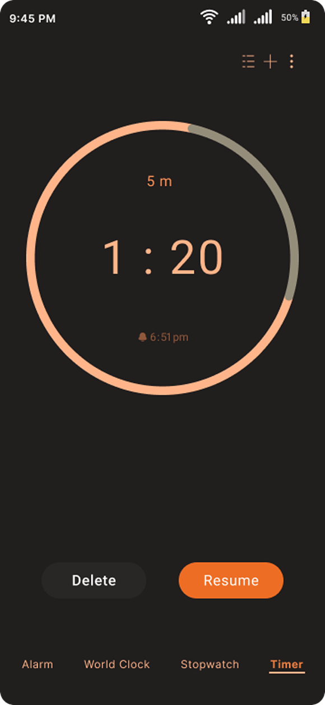

Exploring how components adapt and reflow within constrained screen sizes.
APP EXPLORATIONS
Interaction patterns · Navigation · Component behavior

Interaction patterns · Navigation · Component behavior
A set of single-screen UI recreations created to study layout, hierarchy, and interface patterns across different mobile apps. These explorations helped me improve visual consistency, spacing, and component handling within mobile constraints.


A set of focused recreations exploring how everyday digital interfaces solve usability, hierarchy, and interaction challenges across different contexts.
%201.avif)
%201.avif)
%201.avif)
%201.avif) 





A focused breakdown of reusable UI components across different products, studying consistency, scalability, and interaction behavior at a system level.


Disclaimer - This is a self-initiated learning exercise aimed at studying hierarchy, layouts, and user-focused design approaches in established products. All trademarks belong to their respective owners, and this work is not affiliated with or endorsed by them.
“Let’s build thoughtful digital experiences.”